Префектура Мияги · Исиномаки · дизайн и архитектура
Исиномаки после 2011 года: открытое кафе, мебель своими руками и гостиница от дизайнеров
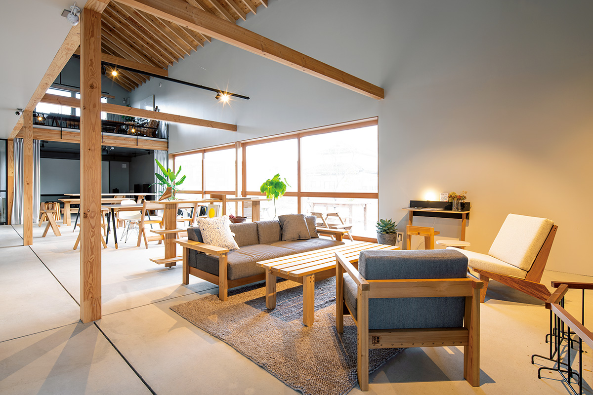
После землетрясения и цунами 2011 года в Исиномаки решили не восстанавливать прежний город, а придумать новый. Из этой идеи выросли кафе, куда может зайти любой, мебельная мастерская с мировым именем и гостиница, где каждую комнату оформили разные дизайнеры.
Город
IRORI Ishinomaki: «лобби» для всего города
Исиномаки в префектуре Мияги сильно пострадал от катастрофы 2011 года. В десяти минутах ходьбы от станции Исиномаки, среди старых торговых улиц, стоит IRORI Ishinomaki. Пространство называет себя «лобби города»: стена со стороны улицы почти целиком состоит из стеклянных раздвижных дверей, и любой, кто заглянет, чувствует себя здесь своим.
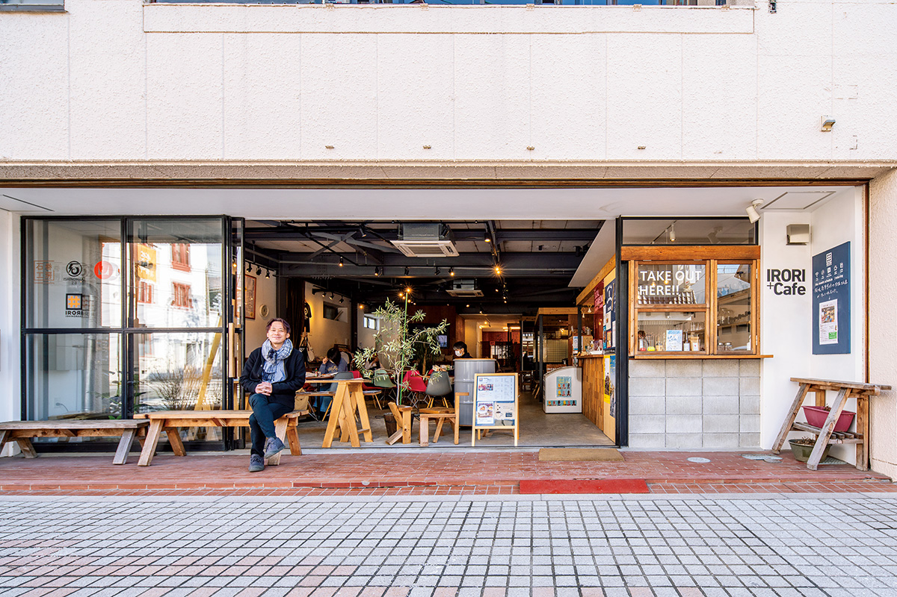
Открытость здесь идёт от тех, кто это место придумал. Пространством управляет объединение ISHINOMAKI 2.0. Его создали молодые добровольцы из пострадавших районов, из Токио и других городов, и девиз у них был простой: сделать самый интересный город на свете. Возвращать Исиномаки к тому, каким он был до катастрофы, они не хотели. Уже летом 2011 года объединение устроило мероприятия вокруг летнего праздника, а в конце года открыло общий офис, который отремонтировали своими руками.
«Как творческий узел мы соединяли самых разных людей и дела, и в городе рождалось и распространялось то, чего в Исиномаки раньше не было»
Гота Мацумура, председатель ISHINOMAKI 2.0
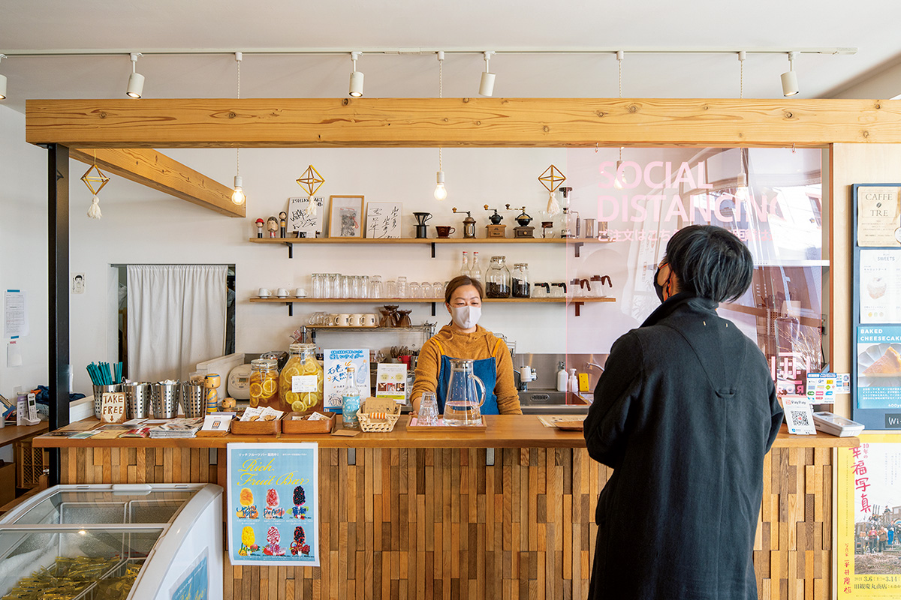
В 2016 году IRORI Ishinomaki обновили и расширили вдвое. С чашкой кофе здесь можно поработать, а участники с абонементом пользуются отдельными кабинками CUBE и своей зоной. В главном зале часто проходят лекции, мастер-классы и временные магазины, так что здесь легко с кем-нибудь познакомиться.
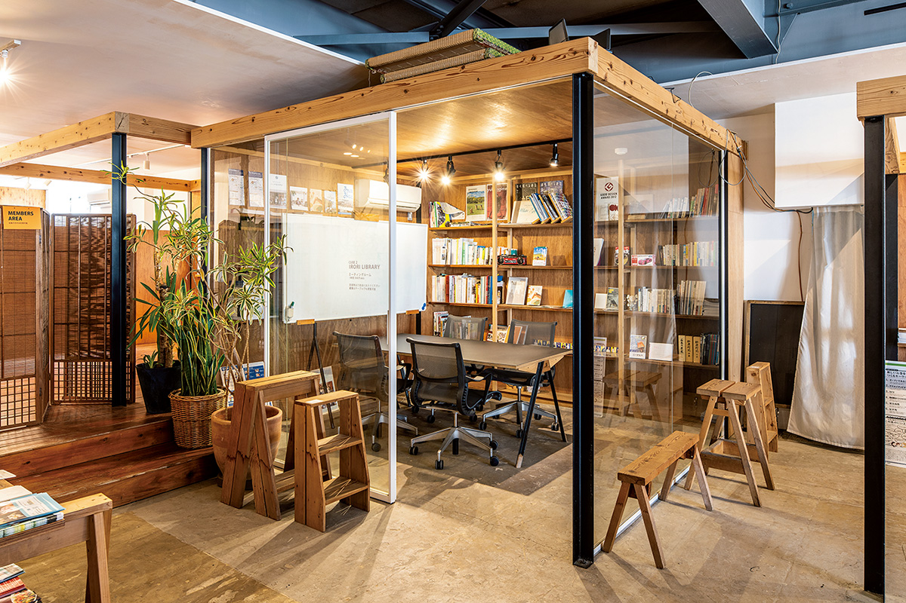
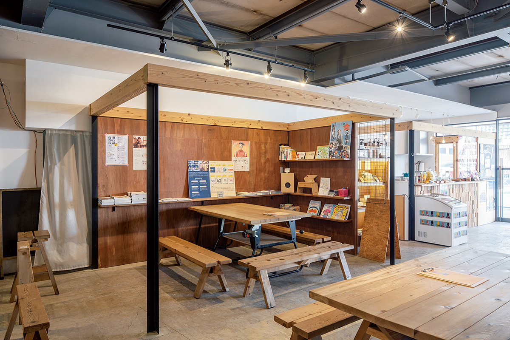
За десять лет вокруг торговых улиц появились и другие интересные места. Совсем рядом стоит «Кю Канкэймару сётэн», старое здание в европейском стиле с плиточным фасадом: его сохранили и открыли как выставочный и культурный центр. В 2021 году неподалёку работали книжная полка с продажей и выдачей книг «Исиномаки мати-но хондана» и галерея Art Drug Center. Такие лёгкие, сделанные своими руками места и есть черта Исиномаки. Третий фестиваль современного искусства Reborn-Art Festival прошёл в два этапа, летом 2021 года и весной 2022 года, и IRORI Ishinomaki служил для него входными воротами. Сюда стоит зайти тем, кто приехал смотреть и архитектуру, и искусство.
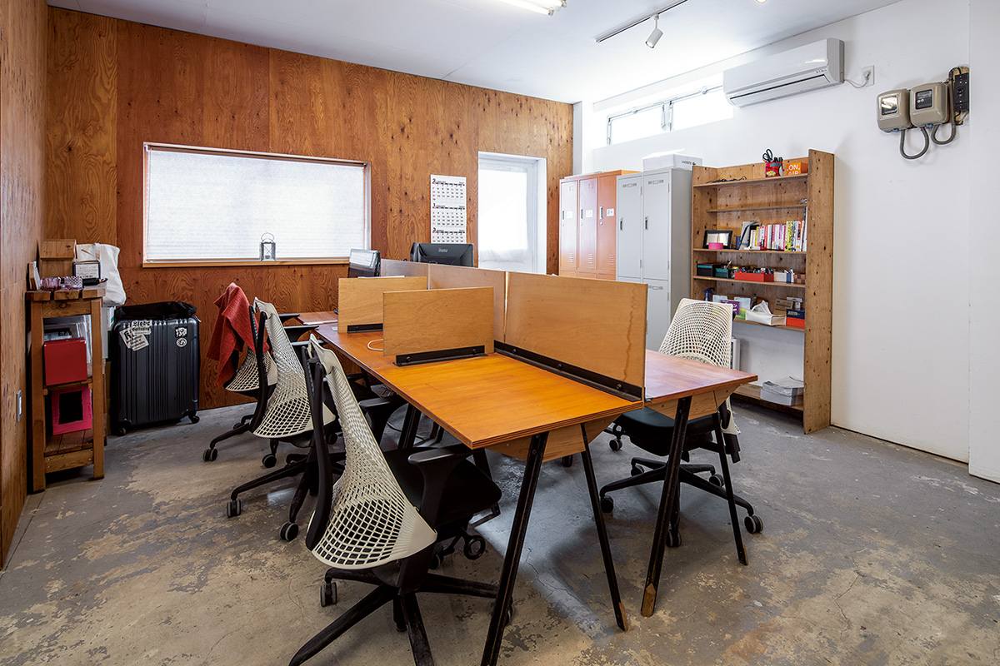
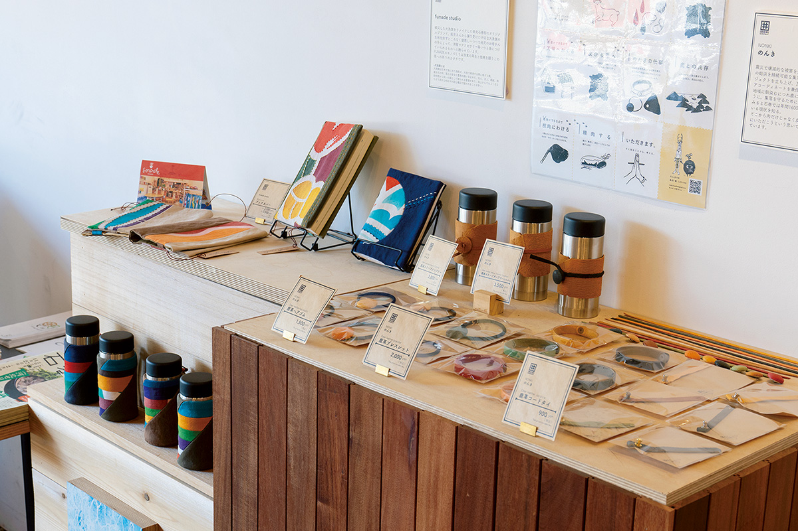
IRORI Ishinomaki
- Адрес
- префектура Мияги, Исиномаки, Тюо, 2-10-2, здание «Ниттая», 1-й этаж
- Телефон
- +81 225-25-4953
- Часы работы
- 10:00–19:00 (аренда зала до 22:00)
- Выходные
- без выходных
Мебель
Ishinomaki Laboratory: мастерская, которая выросла до бренда
На дороге из Исиномаки в Онагаву стоит простое здание с двускатной крышей. Это Ishinomaki Homebase, открытый осенью 2020 года по проекту архитектора Кэйдзи Асидзавы. Через стеклянные раздвижные двери попадаешь в просторный зал высотой во всё здание. В 2021 году здесь работало кафе I-HOP CAFE компании «Исиномаки фарм», которая выращивает в Исиномаки хмель и овощи как социальная ферма, и кофе или пиво можно было выпить, сидя на свободно расставленной мебели из разных пород дерева.
Вся эта мебель сделана в Ishinomaki Laboratory, мастерской, которую после катастрофы основали по инициативе Кэйдзи Асидзавы. Мебель продают, и зал служит шоурумом: можно сесть, сравнить размеры, рассмотреть форму и материал. Мастерская появилась, чтобы город мог восстановиться своими силами, а выросла в известного по всему миру производителя мебели в духе «сделай сам», и посмотреть на неё приезжают люди из разных стран.
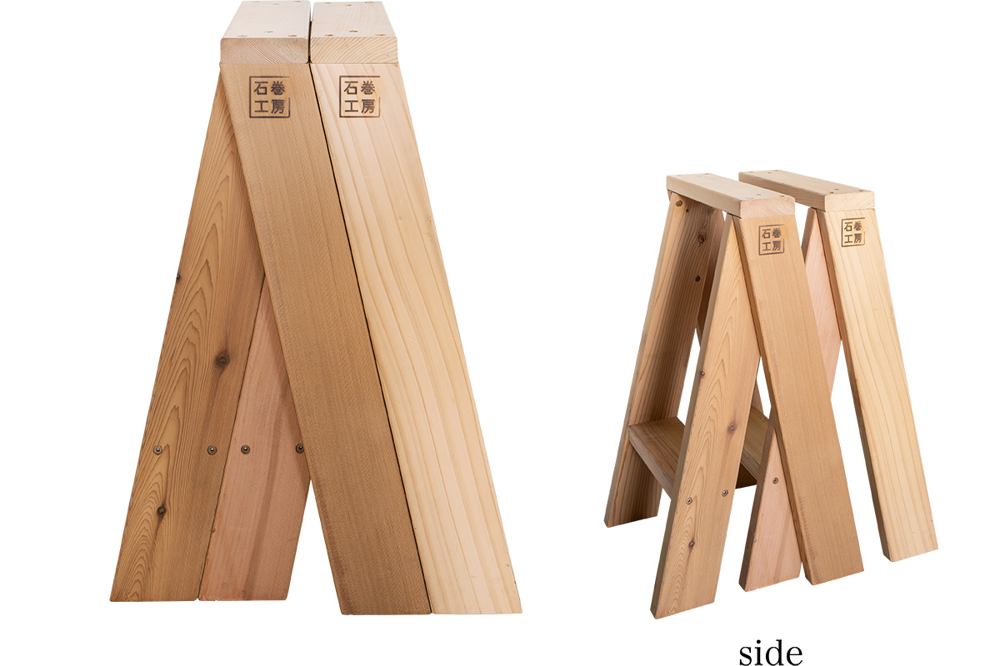
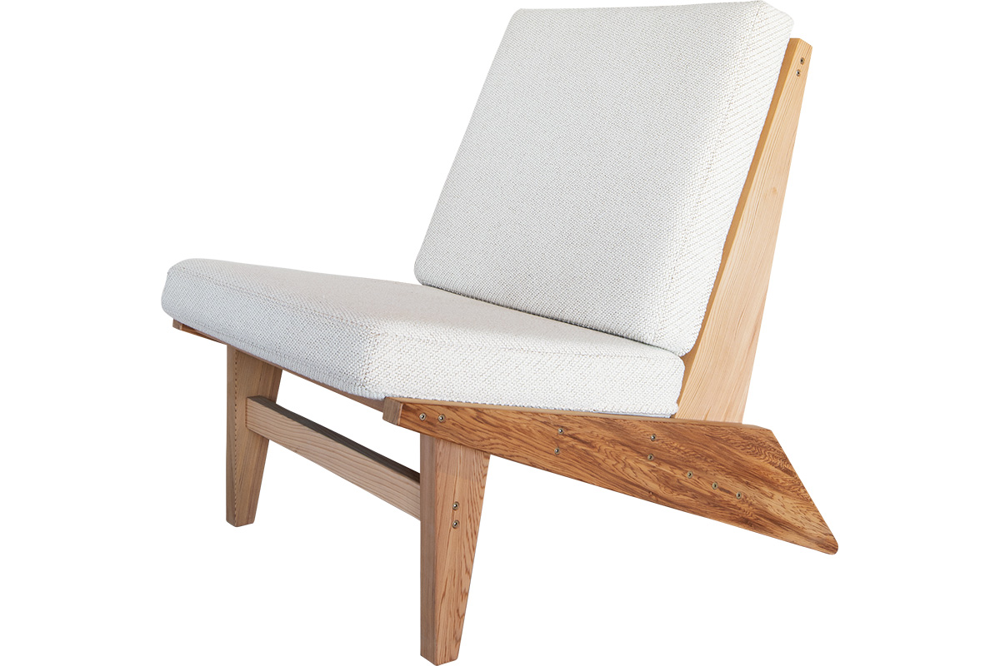
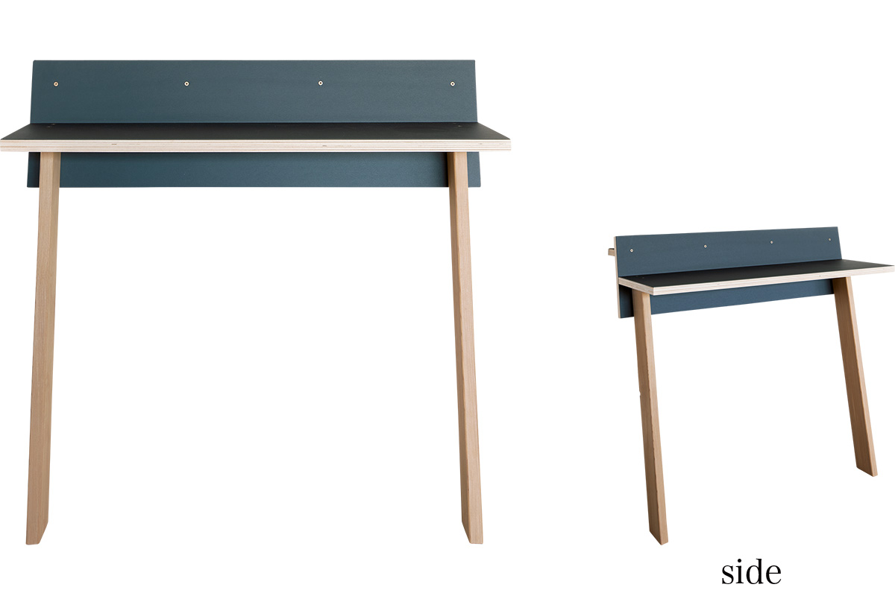
К 2026 году кафе в зале называлось Umikaze Coffee, а Ishinomaki Homebase управляла компания «Исиномаки косакусё».
Шоурум Ishinomaki Laboratory
- Адрес
- префектура Мияги, Исиномаки, Ватаноха, Сакаэда, 91
- Телефон
- +81 225-25-6185
- Часы работы
- 11:00–17:00
- Выходные
- вторник
Ночлег
Ishinomaki Homebase: четыре комнаты, четыре дизайнера
Тем, кто едет смотреть архитектуру, хочется и ночевать в месте с характером. Кроме шоурума в Ishinomaki Homebase есть гостевые комнаты: четыре на втором этаже, с окнами на высокий зал. Каждую оформили архитекторы и дизайнеры, которые работали с Ishinomaki Laboratory над мебелью и тканями. У каждой комнаты своё имя и своя тема, а встроенная мебель показывает почерк автора. Заодно мебель Ishinomaki Laboratory можно проверить в деле, в обычной жизни.
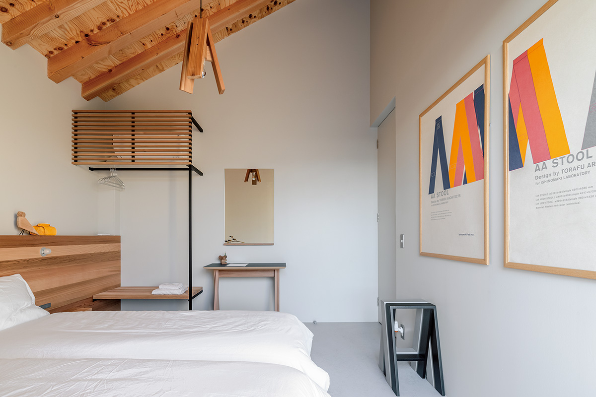
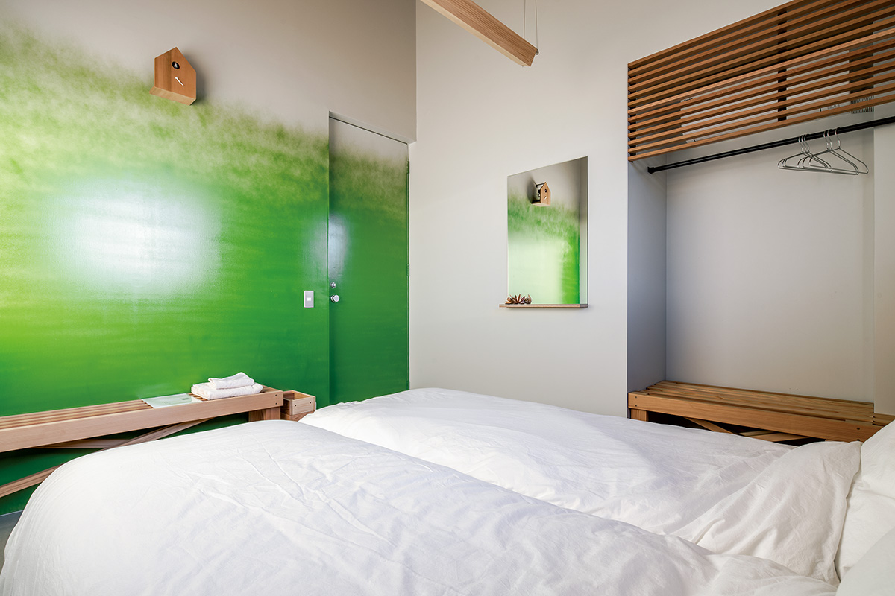
Кухня, холодильник, душ и туалет общие, но кухня просторная, и в ней приятно готовить, а за большим столом удобно работать. Комнаты подходят для поездки компанией и для корпоративных семинаров. Ночь в 2021 году стоила от 5000 иен с человека при размещении вдвоём.
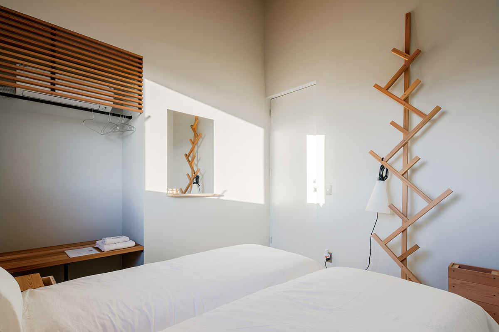
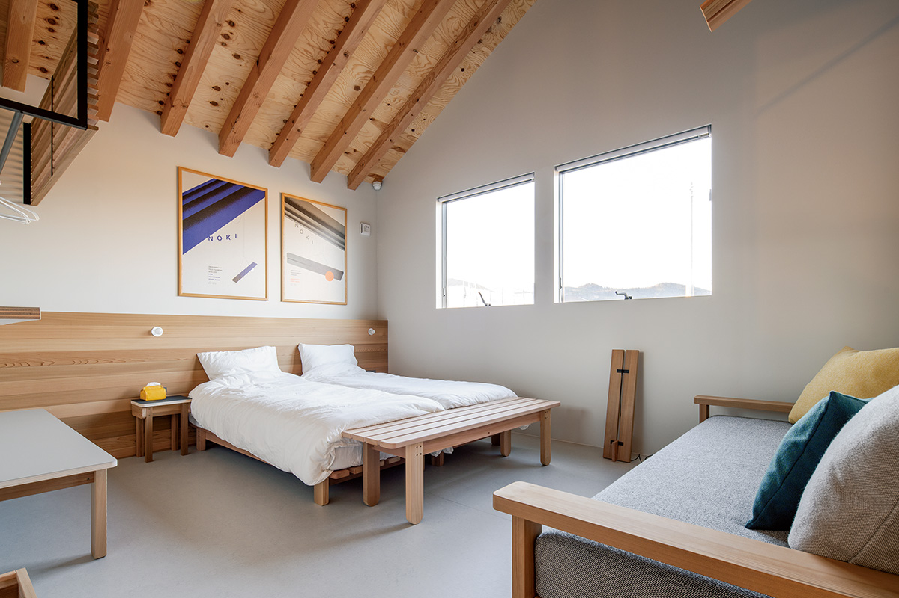
От Ishinomaki Homebase дорога ведёт в соседнюю Онагаву, где после 2011 года построили станцию и онсэн по проекту Сигэру Бана: о ней рассказывает статья Станция Онагава.
Ishinomaki Homebase
- Адрес
- префектура Мияги, Исиномаки, Ватаноха, Сакаэда, 91
- Телефон
- +81 225-25-5082
- Цены / Вход
- от 5000 иен с человека при размещении вдвоём
- Заезд / выезд
- 15:00 / 10:00
Море
Fisherman Japan: рыбаки нового поколения
После катастрофы молодые рыбаки побережья Тохоку объединились в Fisherman Japan, чтобы изменить местное рыболовство: их девиз «новые 3K», то есть круто, прибыльно и по-новому. В 2021 году они продавали дары моря Санрику, одного из трёх крупнейших рыболовных районов мира, и через интернет, но к 2026 году онлайн-продажа морепродуктов была приостановлена. На базе объединения в Исиномаки обмениваются новостями через стойку и продают фирменные товары.
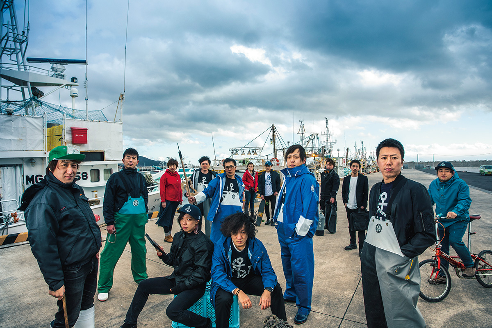
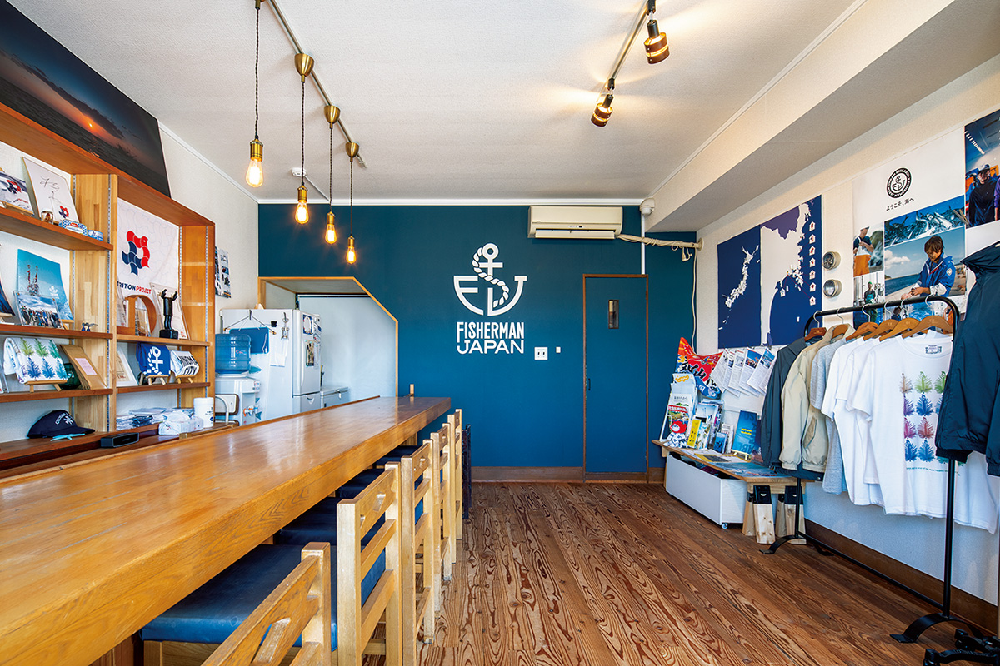
Fisherman Japan
- Адрес
- префектура Мияги, Исиномаки, Сэнгоку-тё, 8-20, TRITON SENGOKU
- Телефон
- +81 225-98-7071
- Часы работы
- 11:00–17:00
- Выходные
- суббота, воскресенье, праздники, бывают нерегулярные выходные
Фото: Тэруаки Цукуи, Масаки Огава.